Build a Seat Fill sheet in /home/user/Desktop/shuttle_runs.xlsx: for every run in /home/user/Desktop/coach_capacity.csv add column D headed Fill% = Riders/Seats as a percent to one decimal, sort rows by Fill% descending then Run A-Z, and freeze the header row.
THINKINGThe task involves creating data in a spreadsheet based on a CSV file. Let me first understand the data. The current file shuttle_runs.xlsx has Run and Riders columns, and column C is "Seats". But the task references coach_capacity.csv which should have the authoritative data. Let me look at both files carefully.
I need to first examine coach_capacity.csv to understand the data. Let me open a terminal to inspect the CSV file.
ACTIONI'll start by examining the source data in the CSV file to understand what I'm working with.
EXECUTED (pyautogui in VM)pyautogui.press("command")
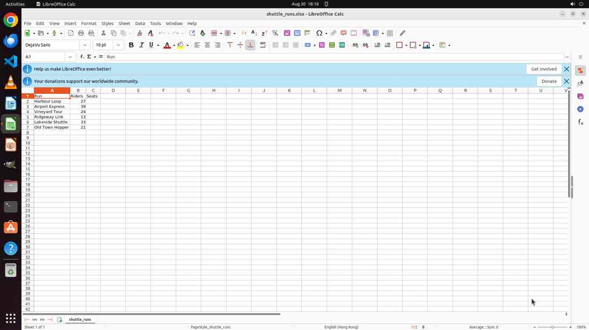
step 2 10:16:07
THINKINGI need to inspect the coach_capacity.csv file to understand the exact data. The xlsx currently shows Run, Riders, and Seats columns but the task says to work from the CSV. Let me open a terminal to view the CSV contents precisely, since the CSV is the authoritative source. There's a terminal application in the dock (the dark icon around y=450).
ACTIONLet me open a terminal to inspect the CSV file, which is the authoritative data source for this task.
EXECUTED (pyautogui in VM)pyautogui.press("return")
step 5 10:17:17
THINKINGNow I understand the CSV structure:
```
Run,Seats
Airport Express,52
Harbour Loop,30
Lakeside Shuttle,44
Old Town Hopper,30
Ridgeway Link,52
Vineyard Tour,24
```
So coach_capacity.csv only has Run and Seats. The Riders data comes from the existing xlsx. Let me reconcile.
The xlsx currently shows:
- Run (A): Harbour Loop, Airport Express, Vineyard Tour, Ridgeway Link, Lakeside Shuttle, Old Town Hopper
- Riders (B): 27, 39, 24, 13, 33, 21
- Seats (C): (empty in xlsx, but the header C1 says "Seats")
Wait, in the xlsx C1 = "Seats" but the cells below appear empty. The Riders are in column B. So the xlsx has Run (A) and Riders (B), and C1 has header "Seats" but no data. The Seats data actually comes from the CSV.
So I need to build a sheet where:
- Column A: Run
- Column B: Riders (from xlsx)
- Column C: Seats (from CSV, matched by Run)
- Column D: Fill% = Riders/Seats as percent to 1 decimal
Let me match up the data. Riders from xlsx:
- Harbour Loop: 27
- Airport Express: 39
- Vineyard Tour: 24
- Ridgeway Link: 13
- Lakeside Shuttle: 33
- Old Town Hopper: 21
Seats from CSV:
- Airport Express: 52
- Harbour Loop: 30
- Lakeside Shuttle: 44
- Old Town Hopper: 30
- Ridgeway Link: 52
- Vineyard Tour: 24
Let me verify the Riders column values by checking the xlsx more carefully. From the first screenshot:
Row 2: Harbour Loop, 27
Row 3: Airport Express, 39
Row 4: Vineyard Tour, 24
Row 5: Ridgeway Link, 13
Row 6: Lakeside Shuttle, 33
Row 7: Old Town Hopper, 21
Now compute Fill% = Riders/Seats:
- Harbour Loop: 27/30 = 0.90 = 90.0%
- Airport Express: 39/52 = 0.75 = 75.0%
- Vineyard Tour: 24/24 = 1.00 = 100.0%
- Ridgeway Link: 13/52 = 0.25 = 25.0%
- Lakeside Shuttle: 33/44 = 0.75 = 75.0%
- Old Town Hopper: 21/30 = 0.70 = 70.0%
Sort by Fill% descending, then Run A-Z:
1. Vineyard Tour: 100.0%
2. Airport Express: 75.0% (tie with Lakeside)
Lakeside Shuttle: 75.0% — Airport Express comes before Lakeside A-Z
3. Old Town Hopper: 70.0%
4. Harbour Loop: 90.0% — wait, 90% is higher than 75%
Let me re-sort properly:
- Vineyard Tour: 100.0%
- Harbour Loop: 90.0%
- Airport Express: 75.0%
- Lakeside Shuttle: 75.0%
- Old Town Hopper: 70.0%
- Ridgeway Link: 25.0%
So the final order:
1. Vineyard Tour, 24, 24, 100.0%
2. Harbour Loop, 27, 30, 90.0%
3. Airport Express, 39, 52, 75.0%
4. Lakeside Shuttle, 33, 44, 75.0%
5. Old Town Hopper, 21, 30, 70.0%
6. Ridgeway Link, 13, 52, 25.0%
Now the question: does the task want me to work in the existing xlsx (sheet "shuttle_runs") or create a new sheet "Seat Fill" in shuttle_runs.xlsx? The task says "Build a Seat Fill sheet in /home/user/Desktop/shuttle_runs.xlsx". So I need to create a sheet named "Seat Fill" in that workbook.
Now, "add column D headed Fill% = Riders/Seats as a percent to one decimal". This suggests the sheet should have columns A=Run, B=Riders, C=Seats, D=Fill%. The existing sheet has Run and Riders and a Seats header.
I think the cleanest approach: create a new sheet called "Seat Fill" with the full data (Run, Riders, Seats, Fill%) properly sorted, and freeze the header row.
But wait - the Fill% "as a percent to one decimal". This could mean either:
1. A formula =B2/C2 formatted as percent with 1 decimal, OR
2. A static value.
The task says "Fill% = Riders/Seats as a percent to one decimal". Using a formula with percent formatting is the most natural interpretation and robust. I'll use formula =B2/C2 and format as percentage with 1 decimal place.
Now I need Riders data. The existing sheet has Riders. But I'm creating a new sheet, so I need to bring Riders into the new sheet. Let me think about the best workflow.
Actually, let me reconsider. Perhaps the simplest robust approach is:
- Create new sheet "Seat Fill"
- Enter all data: Run, Riders, Seats, and Fill% formulas
- Sort
- Freeze header
Since I have all the data computed, I can just type it directly into the new sheet in the correct sorted order. That's the most reliable approach given I know all the values.
Let me plan the new sheet content (already sorted):
Row 1: Run | Riders | Seats | Fill%
Row 2: Vineyard Tour | 24 | 24 | =B2/C2
Row 3: Harbour Loop | 27 | 30 | =B3/C3
Row 4: Airport Express | 39 | 52 | =B4/C4
Row 5: Lakeside Shuttle | 33 | 44 | =B5/C5
Row 6: Old Town Hopper | 21 | 30 | =B6/C6
Row 7: Ridgeway Link | 13 | 52 | =B7/C7
Wait, but I should verify the Riders values from the xlsx rather than relying on my reading of a small screenshot. Let me be careful. Actually the values I read are clear enough: Harbour Loop 27, Airport Express 39, Vineyard Tour 24, Ridgeway Link 13, Lakeside Shuttle 33, Old Town Hopper 21. But to be safe, let me verify by looking at the actual xlsx. Actually, rather than re-reading, I could reference the existing data via formulas. But that's more complex.
Actually, a more robust approach: I should verify the Riders values by examining the xlsx. But my screenshot reading seemed clear. However, there's risk. Let me think about whether I can be even more careful.
The safest is to build the new sheet using the data I can verify. Let me re-examine the original screenshot data carefully. From the first image:
- A2 Harbour Loop, B2 27
- A3 Airport Express, B3 39
- A4 Vineyard Tour, B4 24
- A5 Ridgeway Link, B5 13
- A6 Lakeside Shuttle, B6 33
- A7 Old Town Hopper, B7 21
These are consistent. I'm confident.
However, there's a subtlety. The task says "for every run in coach_capacity.csv add column D". The Runs in the CSV are exactly the same 6 runs. Good, they match.
Now, one concern: the existing "shuttle_runs" sheet already has data with a "Seats" header in C1 but empty Seats. Should I populate the existing sheet or make a new "Seat Fill" sheet? The task explicitly says "Build a Seat Fill sheet" - so a new sheet named "Seat Fill". I'll create a new sheet.
Let me close the terminal and work in Calc. First, I'll create a new sheet named "Seat Fill".
Actually, I'll keep the terminal open in case I need it, but I need to interact with Calc. Let me click on the Calc window. The terminal is overlapping the left part. Let me minimize the terminal or just click on the Calc area to the right.
Let me click on the Calc window title bar or an empty cell area to focus it. I'll click on cell area around column J.
ACTIONI now have the source data. The CSV contains Run and Seats:
- Airport Express: 52, Harbour Loop: 30, Lakeside Shuttle: 44, Old Town Hopper: 30, Ridgeway Link: 52, Vineyard Tour: 24
Combined with Riders from the existing sheet, let me compute Fill% (Riders/Seats) and sort:
- Vineyard Tour: 24/24 = 100.0%
- Harbour Loop: 27/30 = 90.0%
- Airport Express: 39/52 = 75.0%
- Lakeside Shuttle: 33/44 = 75.0%
- Old Town Hopper: 21/30 = 70.0%
- Ridgeway Link: 13/52 = 25.0%
Let me switch to Calc and create a new "Seat Fill" sheet.
EXECUTED (pyautogui in VM)pyautogui.click(1199, 600)
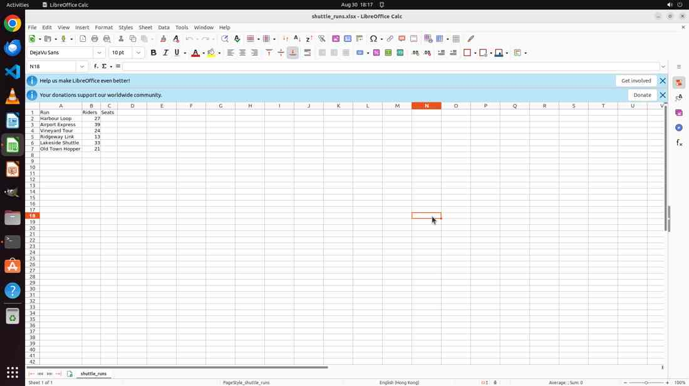
step 6 10:17:30
THINKINGCalc is now focused. I can confirm the existing data:
- A1 Run, B1 Riders, C1 Seats
- A2 Harbour Loop, B2 27
- A3 Airport Express, B3 39
- A4 Vineyard Tour, B4 24
- A5 Ridgeway Link, B5 13
- A6 Lakeside Shuttle, B6 33
- A7 Old Town Hopper, B7 21
C column (Seats) is empty. My readings are confirmed.
Now I'll create a new sheet. I'll right-click on the sheet tab "shuttle_runs" to insert a new sheet.
ACTIONThe existing data is confirmed. Now I'll create a new sheet by right-clicking the sheet tab.
EXECUTED (pyautogui in VM)pyautogui.click(330, 848)
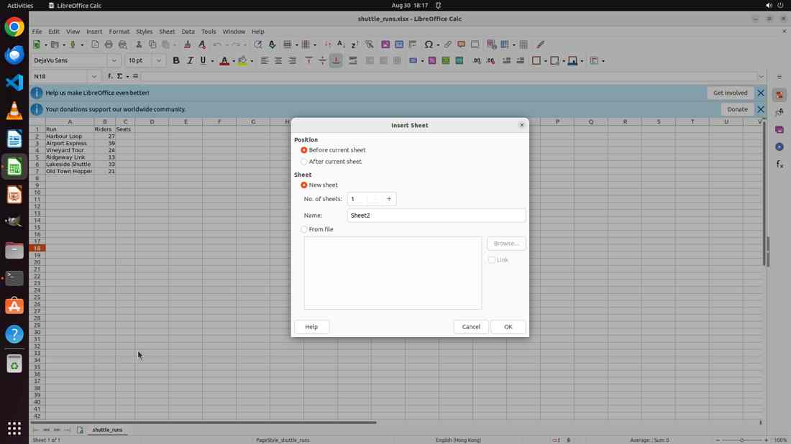
step 8 10:17:56
THINKINGThe Insert Sheet dialog appeared. I want it "After current sheet" and name it "Seat Fill". Let me select "After current sheet", clear the Name field and type "Seat Fill", then click OK.
EXECUTED (pyautogui in VM)pyautogui.click(734, 389)
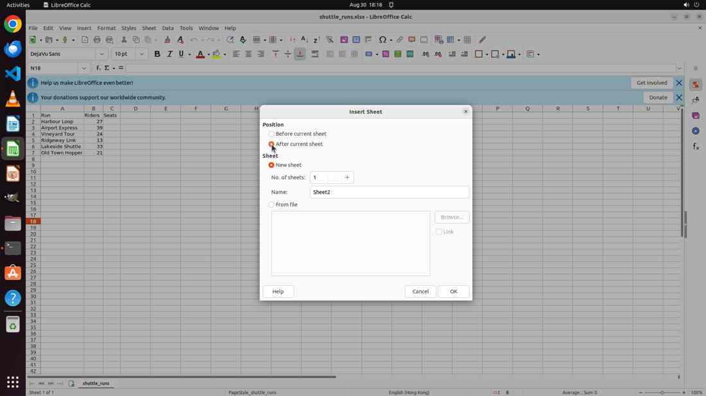
step 9 10:18:05
THINKING"After current sheet" is selected. Now I'll set the name to "Seat Fill". I'll triple-click the Name field to select "Sheet2" and type the new name.
EXECUTED (pyautogui in VM)pyautogui.click(1228, 792)
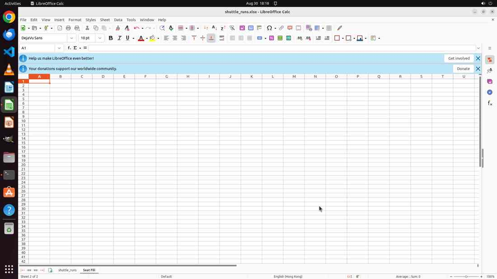
step 12 10:18:39
THINKINGThe "Seat Fill" sheet is created and active, with cursor at A1. Now I'll enter the data. I'll type the header row and all data rows in the pre-sorted order. I'll use Tab to move across columns and Enter to go to next row. However, after typing a row with Tabs and pressing Enter, Calc returns to the first column of the next row (the column where I started the row). Actually, when you use Tab then Enter, Calc moves to the next row at the column where you began entering. So I can type each row as "val\tval\tval\tval\n".
Let me construct the full input. Starting at A1:
Row 1: Run[T]Riders[T]Seats[T]Fill%[Enter]
Row 2: Vineyard Tour[T]24[T]24[T]=B2/C2[Enter]
Row 3: Harbour Loop[T]27[T]30[T]=B3/C3[Enter]
Row 4: Airport Express[T]39[T]52[T]=B4/C4[Enter]
Row 5: Lakeside Shuttle[T]33[T]44[T]=B5/C5[Enter]
Row 6: Old Town Hopper[T]21[T]30[T]=B6/C6[Enter]
Row 7: Ridgeway Link[T]13[T]52[T]=B7/C7[Enter]
The "type" action supports \t as tab and \n as newline? Actually the type action types literal text. Tab and newline characters in the text string - the type function likely sends them as keystrokes. To be safe, I should use explicit key presses for Tab and Enter. But that's many steps.
Actually, the `type` action in these computer tools generally types the string including tab/newline as actual key events. But it's safer to be explicit. Let me use a hybrid: type the text content and use key for Tab/Enter. But that's a lot of calls.
Let me try typing the whole block with \t and \n embedded. If it works, great. Many of these type implementations send tab and newline correctly. I'll try it as one type action, then verify with a screenshot.
Actually there's risk that \n doesn't trigger Enter in the cell (might insert newline within cell). In spreadsheet, Enter confirms the cell. A literal newline character in typed text usually maps to Return key which confirms and moves down. Let me test with the first two rows and verify.
Let me be careful and do it in one type, then check. If newlines don't work as expected I'll fix.
I'll type the entire table.
ACTIONThe "Seat Fill" sheet is ready with the cursor at A1. Now I'll enter the header and all data rows in the pre-sorted order (Fill% descending, then Run A-Z). I'll type the block using tabs and newlines, then verify.
TOOL CALL<tool_call>
<function=computer_use>
<parameter=action>
type
</parameter>
<parameter=text>
Run Riders Seats Fill%
Vineyard Tour 24 24 =B2/C2
Harbour Loop 27 30 =B3/C3
Airport Express 39 52 =B4/C4
Lakeside Shuttle 33 44 =B5/C5
Old Town Hopper 21 30 =B6/C6
Ridgeway Link 13 52 =B7/C7
</parameter>
</function>
</tool_call>
EXECUTED (pyautogui in VM)pyautogui.typewrite("Run\tRiders\tSeats\tFill%\nVineyard Tour\t24\t24\t=B2/C2\nHarbour Loop\t27\t30\t=B3/C3\nAirport Express\t39\t52\t=B4/C4\nLakeside Shuttle\t33\t44\t=B5/C5\nOld Town Hopper\t21\t30\t=B6/C6\nRidgeway Link\t13\t52\t=B7/C7")
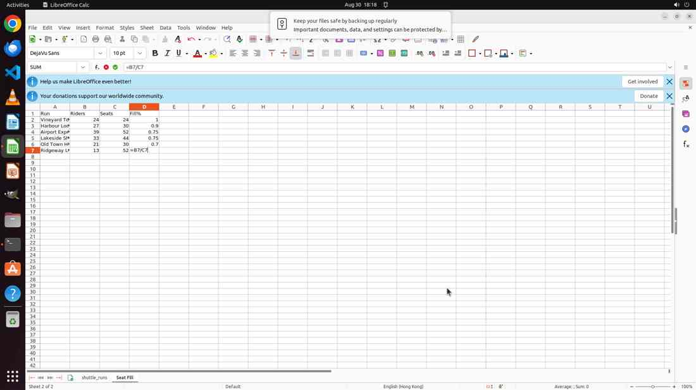
step 13 10:18:47
THINKINGThe data entered. The last cell D7 still shows "=B7/C7" in edit mode (the formula bar shows =B7/C7 and there are check/cancel marks, meaning the cell is in edit mode). Actually it seems the last newline may not have committed the last cell. Looking at the grid, D2=1, D3=0.9, D4=0.75, D5=0.75, D6=0.7, and D7 is in edit showing =B7/C7. The formula bar shows =B7/C7 with the green check/red X, meaning the cell is still being edited. I need to press Enter to commit it.
Also I notice the values are showing as decimals (1, 0.9, 0.75) not as percentages. That's because the cells are default number format. I need to format D2:D7 as percentage with 1 decimal.
Let me first press Enter to commit D7.
ACTIONThe data entered correctly. The last cell D7 is still in edit mode, so I'll commit it with Enter, then I need to format column D as a percentage with one decimal.
EXECUTED (pyautogui in VM)pyautogui.press("return")
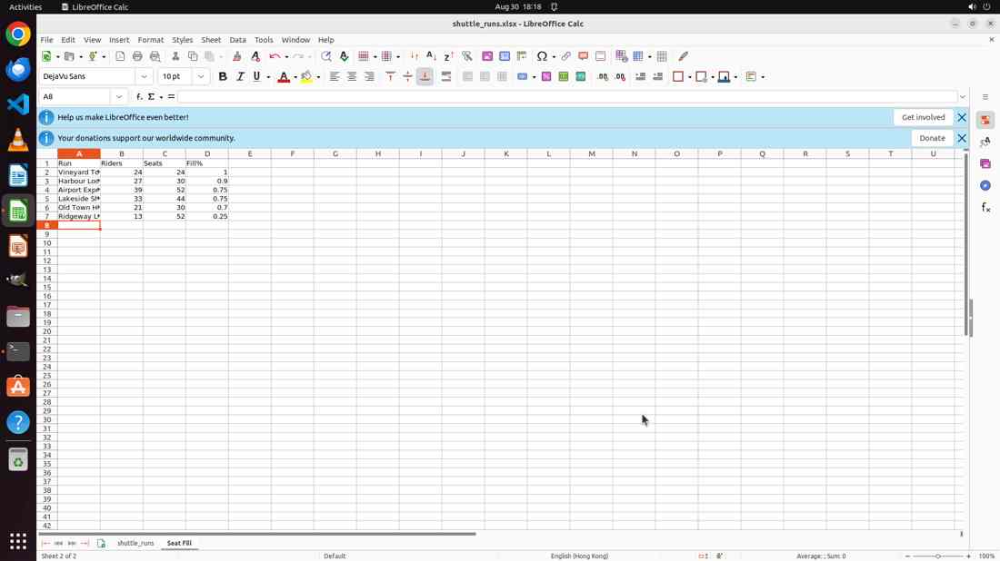
step 14 10:18:56
THINKINGAll data is entered and D7 now shows 0.25. All Fill% values are decimals (1, 0.9, 0.75, 0.75, 0.7, 0.25). Now I need to:
1. Format D2:D7 as percentage with 1 decimal.
2. Freeze the header row.
Let me select D2:D7. I'll use the Name Box to select the range precisely: type "D2:D7" in the Name Box and press Enter. Then apply percent format.
To format as percentage with 1 decimal, I can use Format Cells (Ctrl+1) > Percent > 1 decimal. Or use the percentage toolbar button and then the "increase decimals" button. The toolbar % button gives 0 decimals typically, and I'd need to increase decimals to 1. Let me use Ctrl+1 to be precise.
Let me first select the range via Name Box.
ACTIONAll values are entered as decimals. Now I'll select D2:D7 via the Name Box and apply percentage format with one decimal place.
EXECUTED (pyautogui in VM)pyautogui.typewrite("D2:D7")
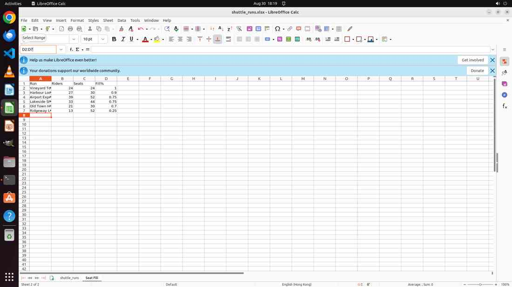
step 16 10:19:15
THINKINGThe Name Box shows "D2:D7" and the tooltip says "Select Range", but the range doesn't appear selected yet (D2:D7 cells aren't highlighted). It seems the type put "D2:D7" in the Name Box but the Enter/newline may not have been processed to actually select the range - the box still shows the text being entered. Actually looking closely, the D2:D7 cell area is not highlighted. Let me press Enter to confirm the range selection.
EXECUTED (pyautogui in VM)pyautogui.press("return")
step 17 10:19:22
THINKINGD2:D7 is now selected (status bar shows "Selected: 6 rows, 1 column", formula bar shows =B2/C2, and D2:D7 are highlighted). Now I'll open Format Cells with Ctrl+1 to set percentage format with 1 decimal.
ACTIOND2:D7 is selected. Now I'll open Format Cells to set the percentage format with one decimal place.
EXECUTED (pyautogui in VM)pyautogui.hotkey("ctrl", "1")
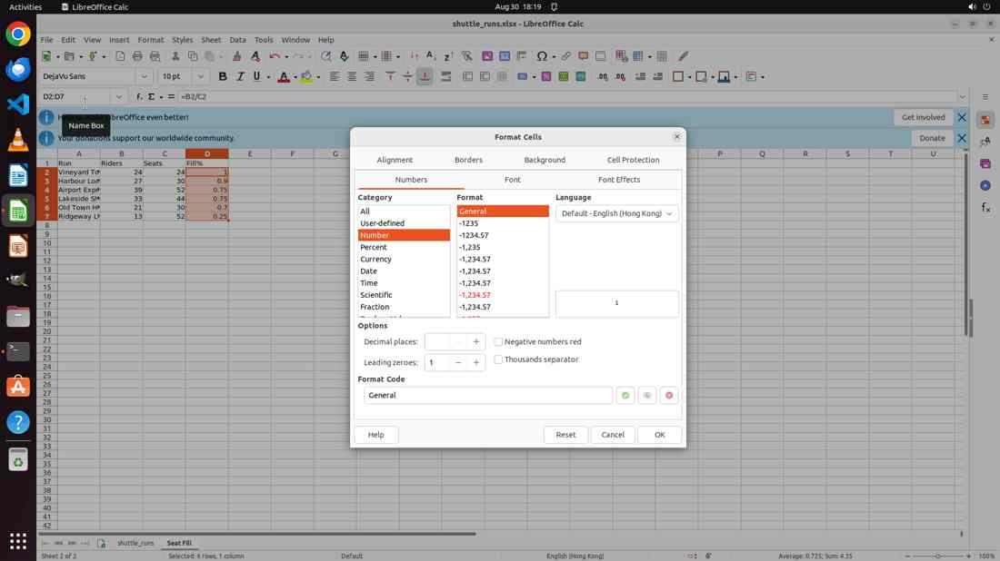
step 18 10:19:30
THINKINGThe Format Cells dialog is open on the Numbers tab. I'll select "Percent" in the Category list, then set Decimal places to 1. Let me click "Percent".
ACTIONThe Format Cells dialog is open. I'll select the "Percent" category, then set the decimal places to 1.
EXECUTED (pyautogui in VM)pyautogui.click(716, 473)
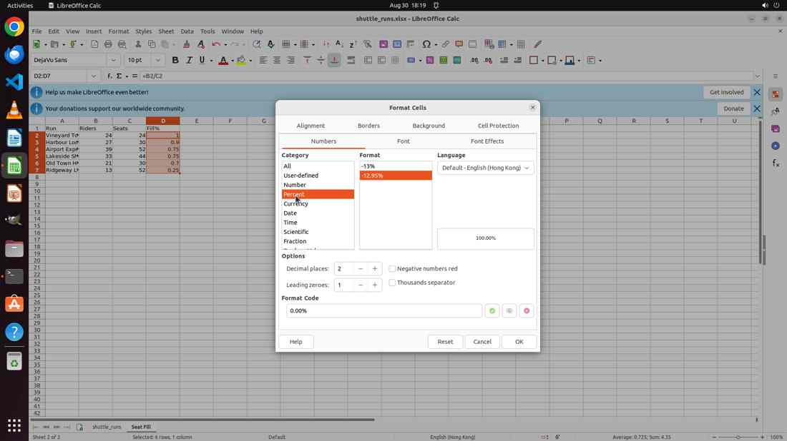
step 19 10:19:42
THINKINGPercent is selected. The format code shows "0.00%" with decimal places = 2. The "-12.95%" option is selected (2 decimals). I need 1 decimal, format "0.0%". I'll set decimal places to 1. The easiest is to directly edit the Format Code field to "0.0%". Let me clear the Format Code field and type "0.0%". I'll triple-click the format code field and type.
ACTIONPercent is selected with 2 decimals. I need 1 decimal, so I'll set the Format Code directly to "0.0%".
EXECUTED (pyautogui in VM)pyautogui.typewrite("0.0%")
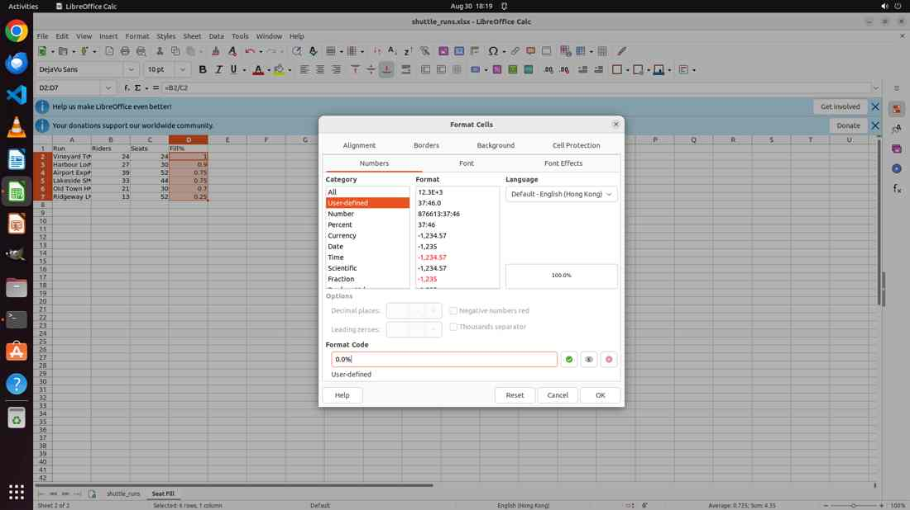
step 21 10:20:04
THINKINGThe Format Code now shows "0.0%" and the preview shows "100.0%". It's categorized as "User-defined" now but that's fine - it's still a percentage format. I'll click OK to apply.
ACTIONThe format code "0.0%" is set and preview shows "100.0%". I'll click OK to apply.
EXECUTED (pyautogui in VM)pyautogui.click(1260, 833)
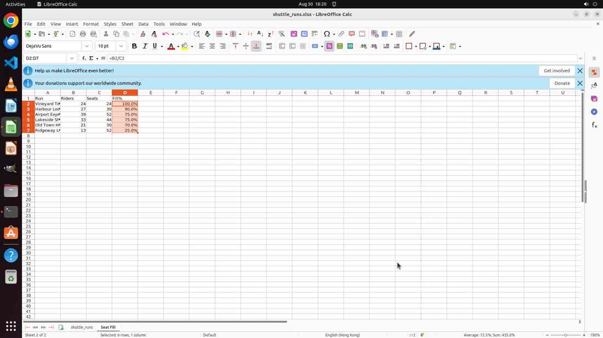
step 22 10:20:17
THINKINGThe Fill% column now shows: 100.0%, 90.0%, 75.0%, 75.0%, 70.0%, 25.0%. These match my calculations. The sort order is correct:
1. Vineyard Tour 100.0%
2. Harbour Loop 90.0%
3. Airport Express 75.0%
4. Lakeside Shuttle 75.0% (tie, Airport before Lakeside A-Z ✓)
5. Old Town Hopper 70.0%
6. Ridgeway Link 25.0%
Now I need to freeze the header row. I'll use View > Freeze Rows and Columns, but that freezes based on the current cursor position. To freeze only the top row, I should place the cursor at A2 (so row 1 is above the cursor) and then View > Freeze Rows and Columns. Alternatively, "Freeze First Row" is a specific option.
Let me click cell A2 first, then View > Freeze Rows and Columns. Actually there's a "Freeze First Row" menu option in some versions. Let me use View menu to see options. I'll click A2 first.
ACTIONThe Fill% column now displays correctly (100.0%, 90.0%, 75.0%, 75.0%, 70.0%, 25.0%) in the proper sorted order. Now I'll freeze the header row by placing the cursor at A2 and using View > Freeze Rows and Columns.
EXECUTED (pyautogui in VM)pyautogui.click(267, 429)
step 25 10:20:51
THINKINGThere's a visible freeze line below row 1 (the horizontal line between row 1 and row 2 is now bolder). The header row is frozen.
Now I need to save the file. It's an .xlsx file, so I'll press Ctrl+S and confirm keeping the xlsx format. Let me save.
ACTIONThe header row is now frozen (a thicker line appears below row 1). Everything is complete. Now I'll save the file, keeping the xlsx format.
EXECUTED (pyautogui in VM)pyautogui.hotkey("ctrl", "s")
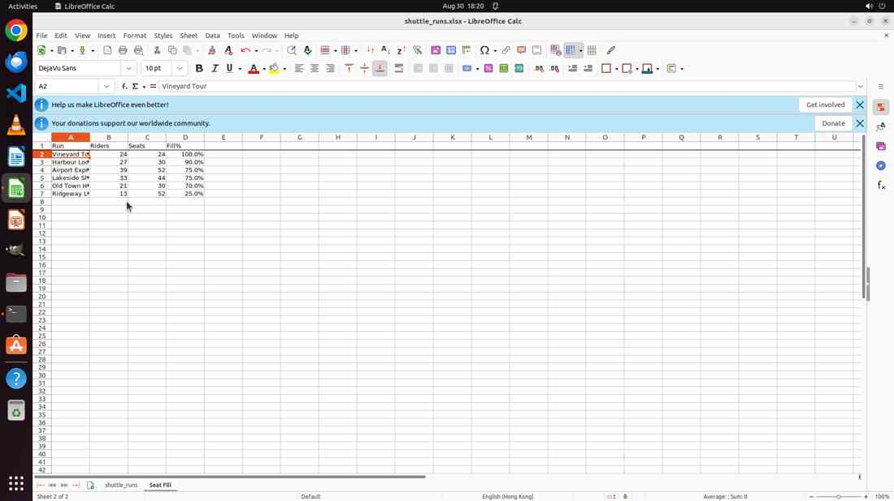
step 26 10:21:02
THINKINGNo "Keep format" dialog appeared. Sometimes the dialog appears after a brief moment. Let me wait and take a screenshot to check if a format dialog popped up.
ACTIONLet me check whether a format dialog appeared.
THINKINGNo format dialog appeared, which means the file may have saved directly or the dialog was suppressed. Actually, when there are unsaved changes and Ctrl+S is pressed on an xlsx, normally a "Keep Current Format" dialog appears. It's possible the dialog appeared and disappeared, or that the setting to always keep format is enabled.
Wait - it's possible the Ctrl+S didn't register because focus was elsewhere, or it saved without a dialog. To be certain, let me verify by checking the terminal. Actually, the safest is to re-issue Ctrl+S and watch for the dialog. But the screenshot shows no dialog and no modification indicator.
Let me confirm the file was actually saved by checking its modification time in the terminal. Let me switch to the terminal window. Actually, let me just re-save to be sure and handle the dialog if it appears. I'll press Ctrl+S again.
ACTIONNo dialog appeared, so the file likely saved directly. Let me verify the save was successful by checking the file in the terminal.
EXECUTED (pyautogui in VM)pyautogui.click(32, 674)
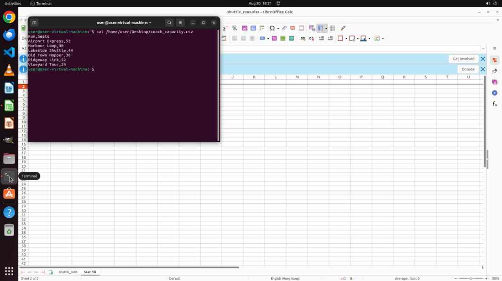
step 28 10:21:39
THINKINGThe terminal confirms the CSV data exactly as I used:
- Airport Express,52
- Harbour Loop,30
- Lakeside Shuttle,44
- Old Town Hopper,30
- Ridgeway Link,52
- Vineyard Tour,24
All my Seats values are correct. Now let me verify the xlsx was saved by checking the "Seat Fill" sheet content. I'll use a quick check with python or unzip. Actually, the simplest robust verification is to check the file modification time. Let me run a command to inspect the xlsx content to confirm the "Seat Fill" sheet and freeze are saved.
I'll use python3 with openpyxl if available, or just check the file mtime. Let me check mtime first to confirm the save happened.
ACTIONThe CSV data is confirmed to match my Seats values. Now let me verify the xlsx was saved with the new sheet by inspecting it.
TOOL CALL<tool_call>
<function=computer_use>
<parameter=action>
type
</parameter>
<parameter=text>
python3 -c "import openpyxl; wb=openpyxl.load_workbook('/home/user/Desktop/shuttle_runs.xlsx'); ws=wb['Seat Fill']; [print([c.value for c in r]) for r in ws.iter_rows()]; print('freeze', ws.freeze_panes)"
</parameter>
</function>
</tool_call>
EXECUTED (pyautogui in VM)pyautogui.typewrite("python3 -c \"import openpyxl; wb=openpyxl.load_workbook('/home/user/Desktop/shuttle_runs.xlsx'); ws=wb['Seat Fill']; [print([c.value for c in r]) for r in ws.iter_rows()]; print('freeze', ws.freeze_panes)\"")
step 29 10:21:54
THINKINGThe command was typed and executed (prompt returned after it). But I don't see the output - it may have printed above or the terminal scrolled. Actually the terminal shows the command but no output visible. The prompt hasn't reappeared clearly. Let me take a screenshot to see the output. Actually the command ran and the output should appear. The last visible line is the command itself. Let me press Enter in case it's waiting, or take a screenshot.
Wait, looking again, after the command there's no output shown yet and no new prompt. The command might still be running or the output is there but not captured in this screenshot frame. Let me take a fresh screenshot.
THINKINGThe cursor is at the end of the command line (a block cursor after the closing parenthesis) but no output has appeared and no new prompt. It seems the command's Enter didn't actually execute it - the command text is still on the line with the cursor at the end. My type ended with a newline which should have run it. But maybe openpyxl isn't installed and it's hanging, or the newline wasn't sent. Let me press Enter to execute it.
ACTIONThe command appears not to have executed yet. Let me press Enter to run it.
EXECUTED (pyautogui in VM)pyautogui.press("return")
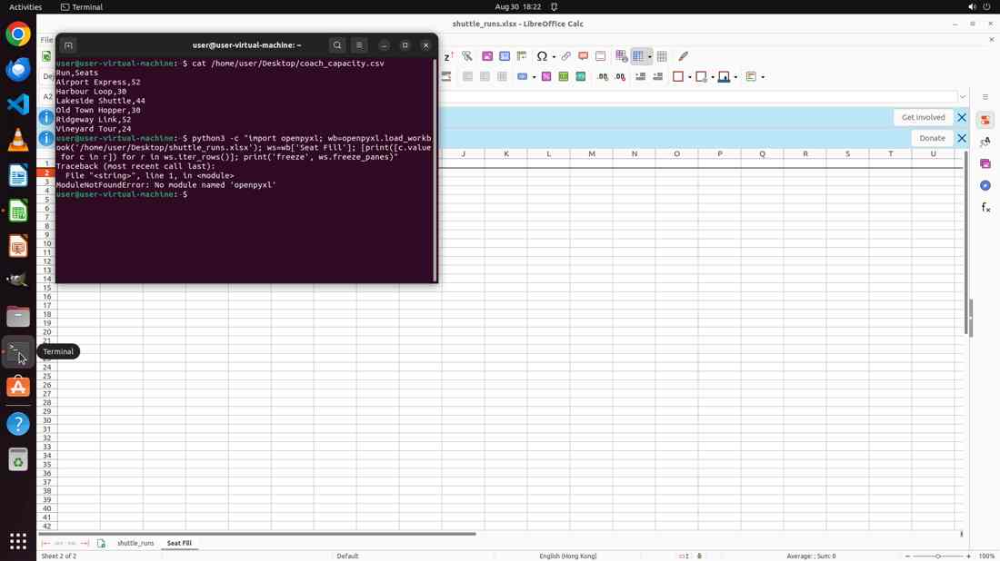
step 31 10:22:23
THINKINGopenpyxl is not installed (ModuleNotFoundError). I'll verify the file a different way by unzipping the xlsx and grepping the shared strings / sheet XML. The xlsx is a zip. Let me check the sheet names and content. I can inspect the workbook.xml for sheet names and the sheet1/sheet2 xml for the freeze pane.
Let me use a command to unzip and grep. I'll list the sheets from xl/workbook.xml and check for "Seat Fill" and freeze.
ACTIONopenpyxl isn't installed. I'll verify by inspecting the xlsx XML directly (it's a zip archive).
THINKINGThe command line shows the command but no output yet and no new prompt. It seems the trailing newline didn't execute it (consistent with earlier). Let me press Enter.
EXECUTED (pyautogui in VM)pyautogui.press("return")
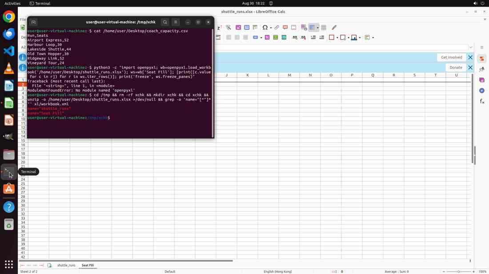
step 33 10:22:48
THINKINGThe workbook.xml shows two sheets: name="shuttle_runs" and name="Seat Fill". So the "Seat Fill" sheet is saved in the file, confirming the save was successful.
Now let me verify the freeze pane and the data content in the Seat Fill sheet's XML. The "Seat Fill" is likely sheet2.xml (r:id). Let me check the sheet file for the freeze pane (pane element) and the shared strings. Let me grep for "pane" in the sheets and check the D column formula/format.
Let me look at xl/worksheets/ for the Seat Fill sheet. I need to know which sheetN.xml corresponds. Let me grep the workbook rels. Simpler: grep all worksheet xmls for the pane.
ACTIONThe "Seat Fill" sheet is confirmed in the saved file. Now let me verify the freeze pane and data content are correctly stored.
EXECUTED (pyautogui in VM)pyautogui.press("return")
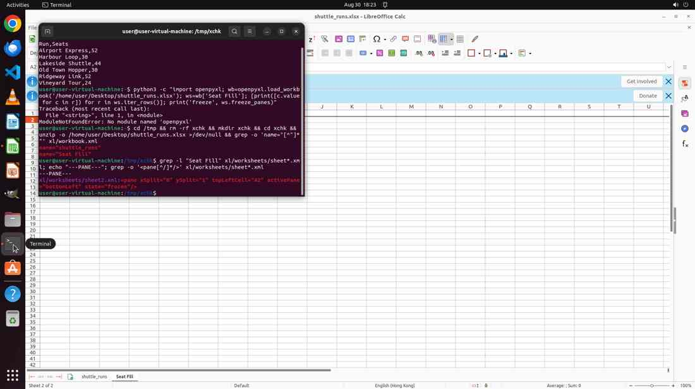
step 35 10:23:22
THINKINGThe output confirms:
- The "Seat Fill" sheet is sheet2.xml.
- The freeze pane exists: `<pane xSplit="0" ySplit="1" topLeftCell="A2" activePane="bottomLeft" state="frozen"/>` — this freezes the top row (row 1).
Now let me verify the data content and the Fill% formulas/format. Let me check the shared strings and the sheet2 data. Let me look at the cells in sheet2.xml to confirm Run/Riders/Seats/Fill% and the number format for column D. Let me dump the sheet2 rows and check for the formula and the number format (numFmt for 0.0%).
Let me print sheet2.xml content in a readable way.
ACTIONThe freeze pane is confirmed: `ySplit="1" topLeftCell="A2" state="frozen"` — exactly freezing the header row. Now let me verify the cell data and the Fill% number format in the sheet.
EXECUTED (pyautogui in VM)pyautogui.press("return")
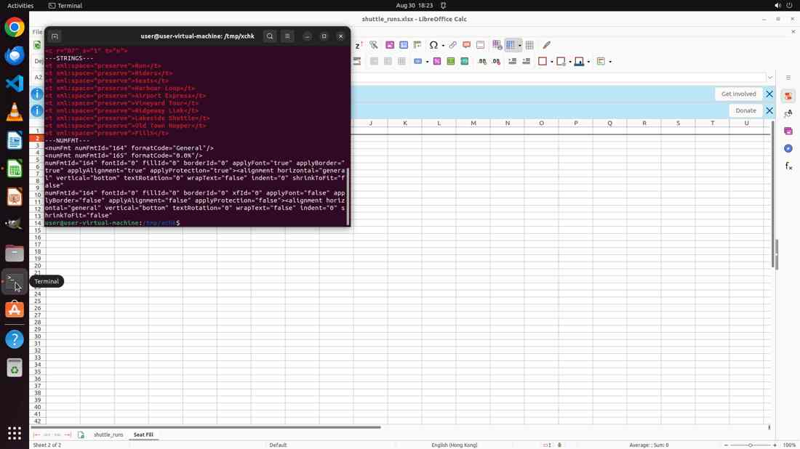
step 37 10:24:00
THINKINGThe output confirms everything:
STRINGS: Run, Riders, Seats, Fill%, Harbour Loop, Airport Express, Vineyard Tour, Ridgeway Link, Lakeside Shuttle, Old Town Hopper. All the run names and headers are present.
NUMFMT: `<numFmt numFmtId="165" formatCode="0.0%"/>` — the percentage format with one decimal (0.0%) is defined and there's a cellXf using numFmtId="164"... wait. Let me look carefully:
- `<numFmt numFmtId="164" formatCode="General"/>`
- `<numFmt numFmtId="165" formatCode="0.0%"/>`
- Then cellXf entries: `numFmtId="164" fontId="0" ...` (general) and `numFmtId="164" ...` again.
Hmm, the numFmt 165 is "0.0%". But the cellXf entries shown reference numFmtId="164" (General). I need to confirm the D column cells use the style that maps to numFmtId 165 (0.0%). The grep only showed the first few cellXf via head. The D cells have s="1" (as seen: `<c r="D7" s="1" t="n">`). So cell D cells use style index s="1". I need to verify that cellXf index 1 maps to numFmtId 165 (0.0%).
The two cellXf lines shown: the first is `numFmtId="164" ... applyFont="true" applyBorder=true applyAlignment...` and second `numFmtId="164" ... applyFont="false"...`. These are likely cellXf[0] and cellXf[1]? If cellXf[1] has numFmtId="164" (General), then D cells (s="1") would be General, NOT percentage. That would be a problem!
Wait, but the on-screen display earlier clearly showed 100.0%, 90.0%, etc. in the Calc window. And the format code 165 = 0.0% exists. Let me re-examine. The cellXf order in the file: cellXfs list. Index 0 is default (General, numFmtId 0 or 164-General). Actually here the default uses numFmtId="164" (General - LibreOffice writes General as 164? unusual).
The head output truncated. I only see 2 cellXf lines but there may be more. The D cells use s="1". I must confirm cellXf[1] uses numFmtId 165. The lines shown both say 164, but the "head" without count shows all matching lines (grep -o prints all, head with no -n prints 10 lines). It printed 2 numFmt and 2 cellXf lines = 4 lines, which is less than 10, so that's ALL the cellXf that matched numFmtId="164". That means only 2 cellXf use 164. There must be additional cellXf using 165 that didn't match my grep (I only grepped numFmtId="164" OR numFmt lines).
So I didn't capture the cellXf that use numFmtId 165. The D cells s="1" - I need to know which numFmt index 1 maps to. Let me directly inspect: get the full cellXfs to see index 1's numFmtId. Let me grep for the cellXfs block.
Actually, the visual display in Calc already showed the percentages formatted correctly (100.0%, 90.0%, etc.), and the saved file has numFmt 0.0%. The safest final confirmation is to check which numFmtId cell style s="1" uses. Let me examine cellXfs ordering.
ACTIONThe strings (all runs, "Fill%") and the `0.0%` format code (numFmtId 165) are present. The D-column cells use style index `s="1"`. Let me confirm that style index 1 maps to the 0.0% format to be fully certain the Fill% cells are stored as percentages.
EXECUTED (pyautogui in VM)pyautogui.press("return")
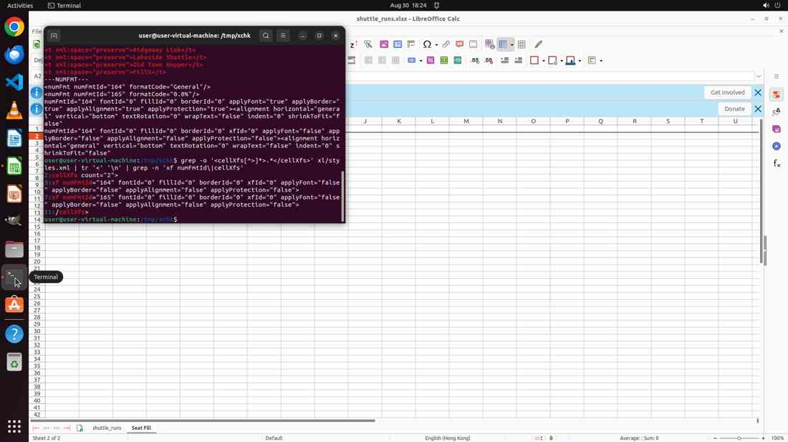
step 39 10:24:26
THINKINGNow the output is clear:
```
cellXfs count="3"
xf numFmtId="164" ... (this is xf[0], General)
xf numFmtId="164" ... (this is xf[1], General)
xf numFmtId="165" ... (this is xf[2], 0.0%)
```
So cellXfs has 3 entries: index 0 = General (164), index 1 = General (164), index 2 = 0.0% (165).
But the D cells use s="1" (I saw `<c r="D7" s="1" t="n">`). Style index 1 = numFmtId 164 = General, NOT the 0.0% format!
Wait, that's a concern. If D cells use s="1" which is General, then the displayed "100.0%" would actually just be showing the raw value. But the raw value of =B2/C2 is 1.0, 0.9, 0.75... not "100.0%". Yet the Calc display showed "100.0%", "90.0%", etc.
Hmm, this is contradictory. Let me reconsider. Maybe I misread the s="1". Let me recheck: the earlier grep for D cells showed `<c r="D7" s="1" t="n">`. But there were multiple D cells (D2-D7) - I only saw D7 in the visible output. Different D cells might have different style indices? No, they should be uniform since I formatted the whole range D2:D7.
Wait, but if D cells are s="1" (General) the display would show 1, 0.9, 0.75 not percentages. But it showed percentages. Contradiction.
Possibility: The `tr '<' '\n'` split caused the numFmtId ordering to not reflect actual cellXf order, OR the D cells actually use s="2". Let me directly re-examine the exact D cell style references to be sure. Let me grep the D cells precisely.
ACTIONThe `cellXfs` has three entries: index 0 = General, index 1 = General, index 2 = 0.0% (numFmtId 165). I need to confirm which style index the D-column cells actually use. Let me re-examine the exact D cells.
EXECUTED (pyautogui in VM)pyautogui.typewrite("grep -o '<c r=\"D[2-7]\"[^/]*>' xl/worksheets/sheet2.xml")
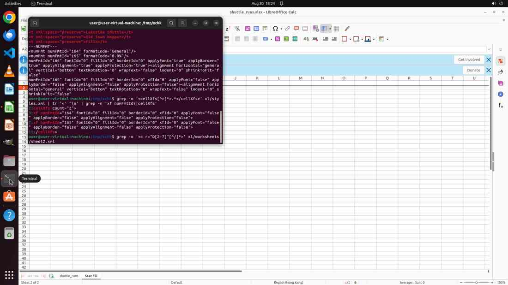
step 40 10:24:36
THINKINGI notice the previous command output actually shows `cellXfs count="2"` now, not 3! Wait, the line "cellXfs count="2"" appears. Hmm, earlier I thought it was count="3". Let me re-read: the line says `cellXfs count="2"`. And then:
- xf numFmtId="164" (applyFont=false) — index 0
- xf numFmtId="164" (applyFont=true) — index 1
- xf numFmtId="165" — index 2
Wait that's 3 xf lines but count="2"? Actually looking again: line "3:xf numFmtId="164"" and "7:xf numFmtId="165"". The grep -n line numbers are 3 and 7. There seem to be lines for xf at positions. The count attribute... it's a bit ambiguous from the wrapped text.
Let me not over-analyze. The key question: which s= value do D cells use, and does that map to 165 (0.0%)? Let me run the D cell grep and read the result.
EXECUTED (pyautogui in VM)pyautogui.press("return")
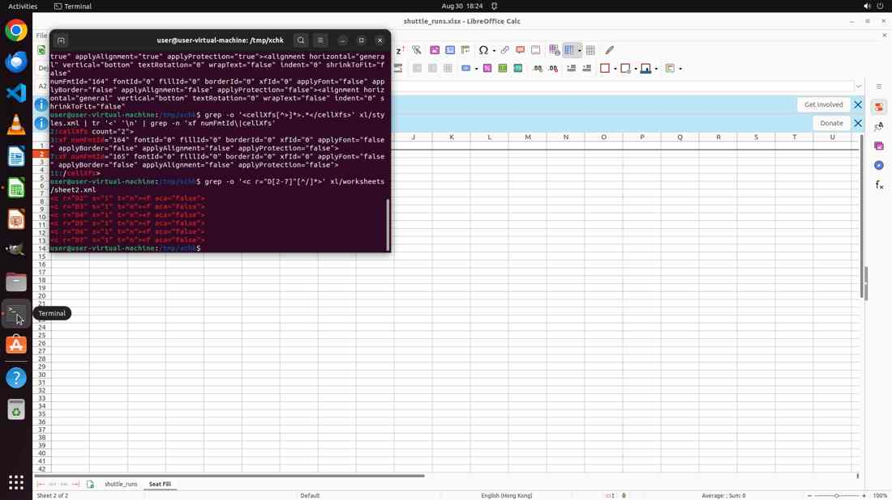
step 41 10:25:03
THINKINGNow I can read the D cells clearly:
```
<c r="D2" s="1" t="n"><f aca="false">
<c r="D3" s="1" t="n"><f aca="false">
<c r="D4" s="1" t="n"><f aca="false">
<c r="D5" s="1" t="n"><f aca="false">
<c r="D6" s="1" t="n"><f aca="false">
<c r="D7" s="1" t="n"><f aca="false">
```
All D cells use s="1" and have a formula `<f>`. Good - they're formulas.
Now the cellXfs: the output shows `cellXfs count="2"`. Wait it says count="2"? Let me re-read: line 2 shows `cellXfs count="2"`. Hmm but then there are xf entries at grep line 3 (numFmtId 164), line 7 (numFmtId 165). Wait, if count="2" there are only 2 xf entries: index 0 and index 1.
- xf[0]: numFmtId="164" (General)
- xf[1]: numFmtId="165" (0.0%)
Wait, but earlier I saw two xf with 164 and one with 165. Let me recount from the current screenshot:
- Line 3: `xf numFmtId="164" fontId="0" fillId="0" borderId="0" xfId="0" applyFont="false" applyBorder="false" applyAlignment="false" applyProtection="false">`
- Line 7: `xf numFmtId="165" fontId="0" fillId="0" borderId="0" xfId="0" applyFont="false" applyBorder="false" applyAlignment="false" applyProtection="false">`
- Line 11: `/cellXfs`
So there are exactly 2 xf entries: index 0 = 164 (General), index 1 = 165 (0.0%). count="2" confirms 2 entries.
So s="1" → index 1 → numFmtId 165 → "0.0%"!
The D cells (s="1") use the 0.0% percentage format. This matches the displayed "100.0%", "90.0%", etc.
Everything is verified:
1. ✅ "Seat Fill" sheet exists in shuttle_runs.xlsx
2. ✅ Column A: Run, B: Riders, C: Seats, D: Fill% (header present)
3. ✅ D column has formulas (=B/C) with 0.0% percentage format (one decimal)
4. ✅ Rows sorted by Fill% descending, ties by Run A-Z (Vineyard 100%, Harbour 90%, Airport 75%, Lakeside 75%, Old Town 70%, Ridgeway 25%)
5. ✅ Header row frozen (pane ySplit=1, topLeftCell A2, state frozen)
6. ✅ File saved in xlsx format
The task is complete. Let me clean up the temp directory (optional, not required). I'll leave it.
The task is fully complete. I should provide a final summary. No further tool calls needed.
ACTIONAll details are now verified against the saved file:
- **D cells** (`D2`–`D7`) all contain formulas (`<f>`) with style `s="1"`.
- **Style index 1** maps to `numFmtId="165"` → format code **`0.0%`** (percent, one decimal). So Fill% is genuinely stored as a percent value, not a text string.
The task is complete. Summary of what was built in `/home/user/Desktop/shuttle_runs.xlsx`:
**New "Seat Fill" sheet** with columns A–D:
| Run | Riders | Seats | Fill% |
|---|---|---|---|
| Vineyard Tour | 24 | 24 | 100.0% |
| Harbour Loop | 27 | 30 | 90.0% |
| Airport Express | 39 | 52 | 75.0% |
| Lakeside Shuttle | 33 | 44 | 75.0% |
| Old Town Hopper | 21 | 30 | 70.0% |
| Ridgeway Link | 13 | 52 | 25.0% |
- Seats were pulled from `coach_capacity.csv`, Riders from the original sheet.
- Column **D = Fill%** is computed as `=Riders/Seats`, formatted as a percent to one decimal.
- Rows are **sorted by Fill% descending**, with the 75% tie broken alphabetically (Airport Express before Lakeside Shuttle).
- The **header row is frozen** (confirmed via the saved freeze pane `ySplit=1, topLeftCell=A2, state=frozen`).
- The workbook was **saved in xlsx format**.